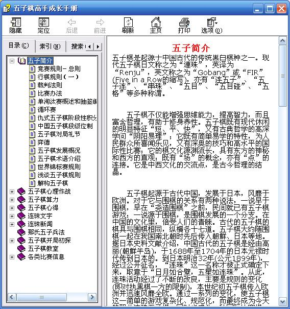

五子棋高手成长手册第一版预览版
首页
定式及研究
#1 五子棋高手成长手册第一版预览版 作者：小丸.net 发表时间：2007-5-11 9:08:04

 五子棋高手成长手册.rar
五子棋高手成长手册.rar
#2 Re:五子棋高手成长手册第一版预览版 作者：无尽 发表时间：2007-5-11 9:51:59

#3 Re:五子棋高手成长手册第一版预览版 作者：yidefei 发表时间：2007-5-11 13:09:23
看了看，很全呢
不过有点得提出一下：里面的图不像图呢？能不能不用txt格式的“图片”呢？
#4 Re:五子棋高手成长手册第一版预览版 作者：陈长春 发表时间：2007-5-26 15:45:17
多谢，我是新手，很喜欢你的电子书。
#5 Re:五子棋高手成长手册第一版预览版 作者：其牌乐75 发表时间：2007-5-29 15:56:22
多谢多谢~~

#6 Re:五子棋高手成长手册第一版预览版 作者：news 发表时间：2007-5-30 15:42:40
谢谢"小丸.net"的辛苦和分享!祝大家涨棋!
#7 Re:五子棋高手成长手册第一版预览版 作者：长笑 发表时间：2007-6-5 19:22:02
谢谢..好东东..
#8 Re:五子棋高手成长手册第一版预览版 作者：黄药师 发表时间：2007-6-18 22:58:02
最好弄一个小学生五子棋的教材，系统的教学！
#9 Re:五子棋高手成长手册第一版预览版 作者：风の情深 发表时间：2007-7-24 21:02:58
找的很全！比较喜欢看那些下棋人的故事！
#10 Re:五子棋高手成长手册第一版预览版 作者：下一站下蛋 发表时间：2007-7-28 8:18:53
kan kan
#11 Re:五子棋高手成长手册第一版预览版 作者：吾本沉默 发表时间：2007-8-11 11:11:11
好东西